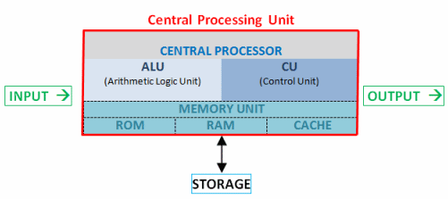

Parts of a Computer?

| |
|
Aims
- Identify the parts of a Computer
- Explain what each part does
Reuse

This work is licensed under a Creative Commons Attribution-NonCommercial-ShareAlike 4.0 International License.
http://creativecommons.org/licenses/by-nc-sa/4.0/deed.en_USThis means you are free to copy and redistribute the material and adapt and build on the material under the following terms: You must give appropriate credit, provide a link to the license and indicate if changes were made. If you adapt or build on the material you must distribute your work under the same license as the original.
Note that this presentation contains images owned by others. Please seek their permission before reusing these images.
Two Sides
A Computer is composed of two types of component:- Hardware: physical parts of the computer
- Software: programs which do work on the hardware
Hardware
What parts of a computer do you think are hardware?
Hardware
These are the main components of a standard computer:
- Processor
- RAM: Random Access Memory
- Storage (Hard Disk)
- Graphics
- Network Interface
- Removable Storage
Peripherals
To use the computer you will often use the following peripherals:
- Monitor
- Keyboard
- Mouse
Processor
The Processor is the critical component; without it the computer will not function.
Commonly referred to as a Central Processing Unit (CPU).
Performs the calculations and operations which allow a computer to process data - this allows the computer to support the user.
Processor
Processor
A Processor can be complex but these are the key units:
- Control Unit: Manages the operations in the CPU - data transfer, instruction direction.
- Arithmetic Logic Unit: Does the basic arithmetic, comparison and logic operations.
- Memory Management Unit: Manages how the CPU talks to working memory.
Modern Processors are often multi-core - meaning more one processor on the same hardware.
Memory
Computers need to store data to work on.
A computer has different types of memory and storage devices which are used to do this.
These technologies allow a computer to work with a memory hierarchy to manage its short and long term needs.
Registers and Cache
Registers are memory locations in the Processor which hold a value being worked or about to be worked on, these are very fast but are expensive and have a specific purpose in the processor.
Cache is a special fast type of memory which is part of the processor but acts as a location where results and new data can be accessed very quickly during a programs operation.
Cache is not as fast as registers.
Cache holds much more data than registers.
Memory
The next level is often termed RAM - Random Access Memory.
This is similar to Cache but is not as fast, it is seperate from the Processor making access slower.
This memory will hold the working set of data for the running programs in the computer.
This memory is fast - not as fast as a processor or cache but much faster than a hard disk drive or DVD.
In modern computers, it is measured in Gigabytes.
Important thing to note about this memory (and cache/registers) is that once you remove power, all the data is lost.
A lot of modern memory comes in the form of DIMMs (Dual In-line Memory Modules)
Storage
Storage is where you keep your data and programs when the power is turned off.
Although RAM is fast, it loses its contents when it has no power - this is where different types of storage come in.
The primary form of storage in a modern computer is the hard disk or solid state drive.
Storage
Hard disks store data magnetically - they are made up of "platters" which are disks coated in magnetic materials which can be altered to store data.
Hard disks can store a lot of data but are slower than memory.
Hard disks rotate the platters very quickly (7200RPM) and have specially designed read/write heads which can move across the disks.
Storage
Solid State Drives are a newer technology with no moving parts - this means that mechanical failure doesn't occur - though electronic failure still can.
SSDs are based around what is called flash non-volatile memory.
It is a little like RAM but is a little slower and doesn't lose its data when the power goes away. It is related to the memory cards in a lot of modern phones and cameras.
Removable Storage
Storage which can be moved from system to system without disassembly
- USB Flash Drive - Storage devices using Flash memory similar to SSD.
- Flash Memory Cards - Similar to SSD and Flash Drive but lack the integrated read/write components
- Optical Storage - DVD, CD, Blu-Ray - Media which is read and written by use of a laser.
- Tape Drives - Magnetic Tape Drives used for large scale storage - mainly in archiving operations
Other Hardware
- Graphics Interface - How the data in the computer gets translated into a format that a monitor can understand.
- Network Interface - Hardware which allows a computer to contact a network and other devices - can be wired or wireless.
Software
Software is what allows us to use the hardware of a computer.
Software is a set of encoded instructions which allows the computer to operate and perform tasks.
Some of these tasks are automatic to keep the system running and others are what the user wants to do.
What type of Software do you know?
- Games
- Office
- Operating Systems
- Browsers
- Drivers
- Malware
System Software
- System Software allows the computer to function and provide services to applications and users.
- This acts as an interface between the hardware, applications and users.
-
System software can be broken down into three main groups:
- Operating System - the essential control programs which manages the computer
- Drivers - Software which allows the Operating System to talk to specific bits of hardware
- Utilities - Software which helps keep the system functioning and aid maintainence.


Applications Software
Applications Software are the class of software we use to work and play with computers.
- Productivity - These allow work to be accomplished. This includes word processing and data analysis.
- Games - Interactive computer games started to become a driving force in home hardware development.
- Entertainment - Computers now use multiple pieces of software to allow different forms of enterainment.


Malware
This class of software are intended to damage computer systems or allow illegal access.
- Virus - hides inside another program, copying itself often damaging data.
- Worm - a progam which exists to replicate itself without user actions.
- Trojan Horse - a program which pretends to be another program and can open up major security problems.
- Rootkit - A piece of software which can help hide malicious software from a system.
Next Time
Software is made using programming languages.
Try to find out about one programming language.
- Name
- When it was first used (approximately)
- What is it commonly used for